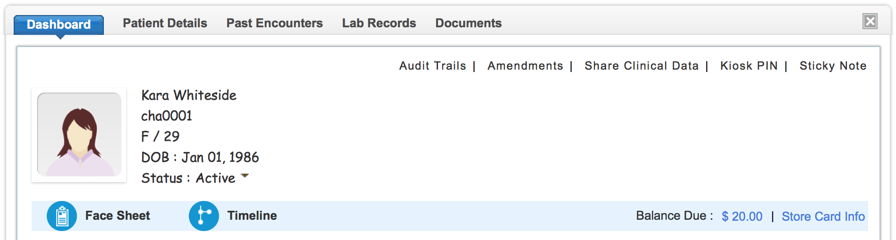

Bluefin Payment Gateway
ChARM EHR is now integrated with Bluefin Payment gateway so that practices can charge their patients from within the application, making the process efficient and reduce patient waiting time. This document describes the Patient Billing Process in ChARM EHR using credit or debit card. Biller or the front office staff designated to collect payments, are the expected users of this functionality.
Payment is initiated either by swiping the Card in a Card reader attached to the computer on which ChARM EHR is running or keying in the card number directly in the Card field in the form. ChARM recommends usage of card reader as it is secure and error free. ChARM EHR does not store the card details, but just a reference ID provided by the Bluefin gateway.
Please contact support@charmehr.com to get your Gateway Account.
Payment Gateway Transactions
ChARM EHR is integrated with Bluefin Payment gateway, which supports medical billing. The practice has to have a Merchant Account with Bluefin.
Supported transactions are:
Sale Transaction:
Sale transaction is the operation in which one where the patent's card is charged for the services rendered.
Card on hand:
Steps to charge a patient debit/credit card when card is on hand.
- Go to Patient Dashboard by selecting the patient. Here one can view "Balance Due" for this patient.
- Click on "Make Payment" link.
- In the form shown below choose beneficiary merchant account to which charge amount has to be credited.
- Choose "Clear invoices automatically", if you want to apply the amount to this patient's invoices automatically.
- "Charge Card On File" option will be shown if card information is stored for this patient. By choosing this option, you can charge this card with out swiping.
- Swipe/key-in card details. You can use any Standard Card Reader for Swipe Card option. Alternatively, you can use Key-in option to manually key in card details.
- Enter amount to be charged from the patient.
- Choose "Store card information" if you want to register this card for future transaction also. This is same as storing card on file.
- Click Make Payment to charge the card. Upon successful transaction, the amount will be credited to the beneficiary merchant's account.
Note: If one chooses "Clear invoices automatically", system will fetch all the patients invoices and clear them one by one by applying the amount till this amount becomes zero.
Sale transaction from Invoices:
Sale Transaction can also be initiated from Invoice Summary View.
- Go to Billing section > Invoices and choose the Invoice. Then, click on the action icon on the right hand side. Click on "View Details" menu.
- In the Invoice Summary View one can see the Payment menu. Click on the Payment drop down menu and choose "Make Payment". Payment form will be shown.
- Choose the Beneficiary merchant account, Swipe/Key-in card details if card is not on file.
- Click "Make Payment" button to initiate the transaction. On successful transaction, charge amount will be credited to the beneficiary’s account and the invoice will be updated.
- Payment receipt is generated automatically. It can be printed from the "Receipts" tab.
Sale transaction from Receipts:
Sale Transaction can also be initiated from Receipts section.
- Go to Billing section > Receipts and Click on "Add Payment".
- Choose the "Payment Method" as "Payment Gateway". Additional fields for providing card details will be shown along with available beneficiary accounts.

- Choose the Beneficiary merchant account, Swipe/Key-in card details if card is not on file.
- "Charge Card On File" option will be shown if card information is stored for this patient. By choosing this option, you can charge this card with out swiping.
- Swipe/key-in card details. You can use any Standard Card Reader for Swipe Card option. Alternatively, you can use Key-in option to manually key in card details.
- Enter amount to be charged from the patient.
- Choose "Store card details in Payment Gateway" if you want to register this card for future transaction also. This is same as storing card on file. If card information already exists on file, stored card details will be replaced with the new card information on successful transaction.
- Outstanding invoices for the patient will be listed. You can apply the amount to these invoices.
- Click "Add" button to initiate the transaction. On successful transaction, charge amount will be credited to the beneficiary's account and the invoices will be updated.
- Payment receipt will be generated for the amount charged on the card.
Store Card On File:
Using this feature provider’s office can register patient’s card info and map it with their Bluefin Merchant Account. Once registered provider can charge the card any number of times without entering card details. This will be useful for future billing.
Procedure to store card on file:
- Go to patient's dashboard by selecting the Patient.
- Click on Store Card Info.
- Choose the Beneficiary merchant account - Card information will be mapped to this beneficiary account. Amount will be transferred to this beneficiary for all transactions done using this Card on File.
- Swipe/Key-in the card details which needs to be registered. For 'Swipe Card' you can use standard card readers.
- If card reader is not available, Click on Key-in option and enter card details manually.
- Click Store. On successful transaction, Card information will be registered and mapped to the Patient. This registered card can be used for future transactions.
Delete stored card:
Stored Card Info can be deleted by clicking on the Delete Card Info option provided in the Patient Dashboard.
Refund Transaction:
This feature allows, provider’s office to refund (partial or full) the patient on sale transactions done using ChARM EHR Bluefin Payment Gateway. Only one refund is permitted per Sale Transaction.
Procedure to Refund:
- Go to Billing > Gateway Transactions. You can also go to patient specific billing view from the patient dashboard. Here all the Sale transactions done using Payment Gateway will be listed here.
- Choose the transaction to be refunded based on the Receipt number.
- Click on the action icon on right hand side. Select Payment Refund
- Refund form by default shows the excess amount in the patient billing. You can modify the amount to be refunded manually. Refund amount should not exceed the Sale Transaction amount.
- Click Refund button to initiate the transaction. Upon success the specified amount will be refunded to the Patients credit or debit card account.
Contact support@charmehr.com for any clarifications or queries.
Recurring Payments
ChARM EHR now allows you to charge a patient's credit card periodically. Our Recurring Payments module will make periodic collections seamless and efficient.
Supported functionalities include
Add Recurring Payments
Using Add Recurring Payments functionality, provider can create a recurring schedule for charging a card periodically. Steps for adding a recurring payments.
- Go to Billing > Recurring Payments > Add Recurring Payments.
- Recurring Payments dialog will be shown. Search and select the patient for whom recurring payments needs to be added. Select Beneficiary
- Click on Recurring Payments, choose Recurring Schedule.
- Enter the card details (You can swipe the card or key-in the card details). Click on Charge Card On File, if you want to charge the card on file.
- Enter number of times to be charged in Recurring Count. Leave Recurring Count empty if you want to charge the card without stop.
- Select the Start Date from which card to be charged.
- Click Add. Recurring Payments will be added. You can view the details by clicking on the list.
Note : If recurring payments is created for new card, it will be enrolled with Bluefin. Page will be redirected to Bluefin. Upon successful enrollment recurring payments will be created.
Card will be charged for the amount as per schedule. Receipts for the payments will be created If the Clear invoices automatically is chosen, amount will be applied to the invoices.
Edit Recurring Payments
Using this option provider can edit the recurring amount, change the recurring schedule, increase the recurring count.
- Go to Billing > Recurring Payments. Click on the action icon on the right side of the Recurring Payments, click Edit.
- Edit dialog will be shown. Adjust the values. Click Update.
Cancel Recurring Payments
Using this option provider can stop the recurring payments.
- Go to Billing > Recurring Payments. Click on the action icon on the right side of the Recurring Payments, click Cancel.
- A warning message will be shown, click OK.
Note : More than one recurring payments can be added for a patient. Multiple recurring payments can be added using the same card on file.